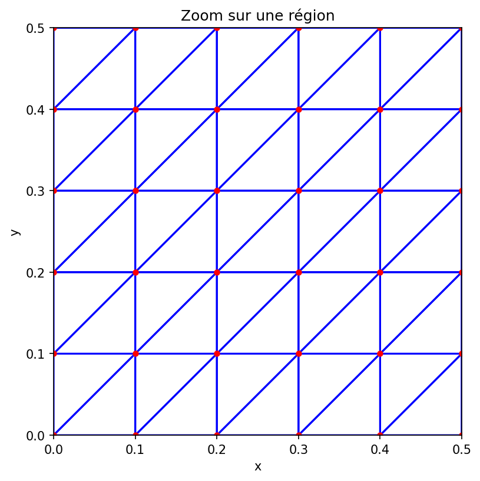

🔬 Visualiseur de Maillages FEniCS
Serveur local démarré avec succès!
Les images se rafraîchissent automatiquement. Relancez le script pour mettre à jour.
📊 Vue complète du maillage

🔍 Vue zoomée

Instructions:
- Utilisez Ctrl+C dans le terminal pour arrêter le serveur
- Relancez le script pour générer de nouvelles images
- Rafraîchissez cette page (F5) pour voir les mises à jour